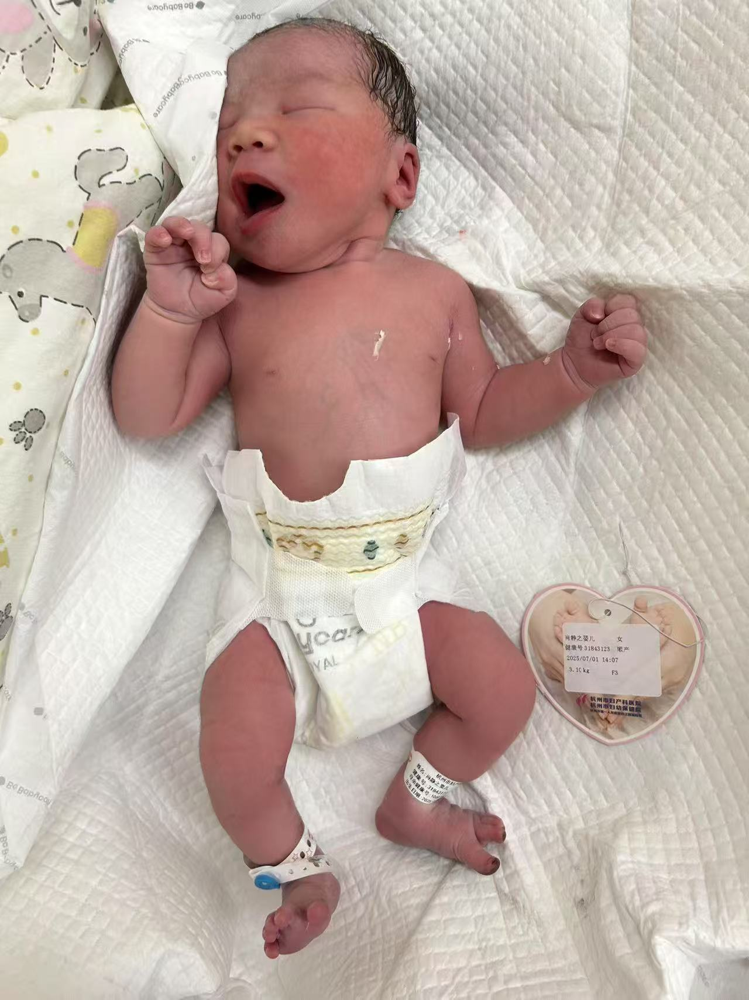

二胎生产记录：在牵挂与期待中迎接你
2025年6月29日 星期日 | 最后的准备工作
今天是产前的最后一个工作日。像往常一样来到公司，但心情已经截然不同——肚子里的小生命随时可能到来。
傍晚6:30，和先生一起到滨江银泰吃晚饭。我们选择了一家安静的餐厅，点了几个清淡的菜。先生笑着说：“这是‘最后的晚餐’了，接下来你可能要忌口好一阵子。”我们聊着即将到来的二宝，也担心着在医院住院的大女儿。
晚上8:00，回到公司。我的工位已经有些凌乱，开始慢慢收拾。把文件整理归类，电脑里的工作资料备份，给同事留下交接清单。摸着渐渐隆起的小腹，心里默默对宝宝说：“再等两天，等妈妈把工作安排好。”
7月1日 星期二 | 黎明时分的信号
凌晨4:00，在睡梦中突然醒来。起身时感觉到一阵异样——见红了。心跳瞬间加速，轻轻推醒身旁的先生：“可能要开始了。”
先生立刻坐起来，睡意全无。我们默契地开始行动：他检查待产包，我换上宽松的衣服。房间里很安静，只有我们轻手轻脚收拾的声音。
凌晨5:00，到达医院。急诊科的护士看到我的情况，立刻安排检查。胎心监护仪发出规律的“咚咚”声，医生检查后说：“宫口已经开了一指，可以进产房了。”
早晨的等待
早上6:00，进入产房。这是一个单人待产室，窗外天色渐亮。先生陪在我身边，我们有一搭没一搭地聊天，分散注意力。宫缩还不算强烈，像是轻微的月经痛。
早上7:00，宫缩开始规律起来。先生握着我的手，我跟着呼吸法的节奏调整呼吸。“像吹蜡烛一样，慢慢吐气……”他念着我们在孕妇学校学到的口诀。
早上9:00-10:00，宫缩强度逐渐增加。疼痛像海浪一样一波波袭来，我闭着眼睛，专注呼吸。先生不停用湿毛巾帮我擦汗，妈妈在一旁轻声鼓励。
早上10:30左右，外婆赶到了医院。在待产房外等待。
关键转折
上午11:00，医生检查后说：“开三指了，可以上无痛。”被麻醉师拼命催着躺好在毫无温度的病床上，感受了对自己来说，麻醉就是工作流水线的某一个环节，每一个产妇就像一个物件被等着打标签。但是不说，麻醉药真是个神奇的药物，当冰凉的药液进入脊柱，那神奇的转变发生了——疼痛感明显减弱，身体终于能够放松。
中午12:00，被推进手术室。无痛让我保持清醒但舒适。助产士开始做最后的准备工作，我能感觉到她们在我周围忙碌。
中午12:30，助产士惊喜地说：“十指全开了！你真棒，我们准备开始用力了。”
最后的冲刺与新生
下午1:00-1:30，医生建议我小睡一会儿，为最后的分娩储备体力。我居然真的睡着了，做了个短短的梦，梦里有两个女儿一起玩耍的画面。
下午1:30，吃了些流食补充能量。巧克力和功能饮料让我恢复了精神。
下午2:00，在助产士的指导下开始用力。“深吸气，憋住，往下用力……好，呼气休息。”先生在一旁握着我的手，他的手掌温暖而有力。
下午2:07，一阵强烈的推力后，我感觉到身体一轻。
“哇——”清脆的哭声响起。
“是个漂亮的女宝宝！，六斤二两”助产士将一个小小的、粉嫩的生命放在我的胸前。
此刻，所有的疲惫都消失了。我看着这个皱巴巴的小人儿，她睁着朦胧的眼睛，似乎在寻找着什么。眼泪不知不觉流下来——是喜悦，是释然，是无限的爱。 下午3:00，生产后半小时，助产士发现二宝身体出汗，便给她测血糖，发现只有3点几（忘记具体多少了），好像说是标准值4mmol/L。就送去新生儿科，待了3天，7月5号和我一起出院。

特殊的产房外
整个生产过程中，产房外只有外婆和先生两人。这和我们生大女儿时一大家子人热热闹闹的场景完全不同。
奶奶正在浙江省中医院陪伴住院的大女儿。这几天，大女儿因为传单（传染性单核细胞增多症由EB病毒引起，典型症状包括发热、咽痛、淋巴结肿大、皮疹等，部分患者可能出现肝脾肿大或血常规异常。）已经住院好几天了。我生产时，先生不停地查看手机，既担心产房里的我，又牵挂医院里的大女儿。
这种被分割的牵挂，是这次生产经历中最特别的部分。一边迎接新生命，一边担忧生病的孩子；一边是诞生的喜悦，一边是治疗的焦虑。
后续与感怀
产后两小时，我被推回病房。先生终于通知了奶奶和远在老家的爷爷、姑姑。
此刻，我意识到我们家的新篇章正式开始了——两个女儿，双倍的爱，也双倍的牵挂。
晚上，收到了奶奶发来的消息：大女儿的病情稳定了，明天可以出院。
这次生产经历让我深刻体会到：
生命的力量——即使在身体最脆弱的时候，女性依然能够完成如此奇迹般的创造
家庭的意义——在最需要的时候，亲人的陪伴是最坚实的支撑
母爱的韧性——心可以同时为多个孩子牵挂，爱不会因为分割而减少，只会不断扩容
感谢勇敢的自己，感谢陪伴的家人，更感谢选择在这个时间来到我们身边的二宝。你姐姐正在康复的路上，很快你们就能相见。而我们这个四口之家，即将开始充满挑战也充满温暖的新生活。
欢迎来到这个世界，亲爱的小女儿。我们等你很久了。